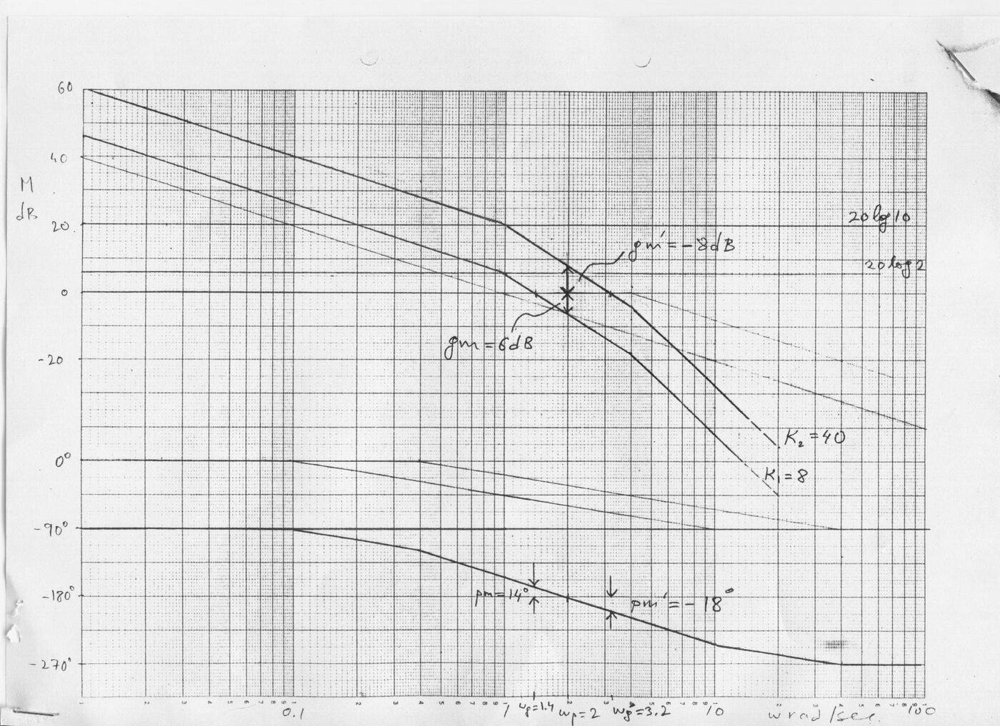
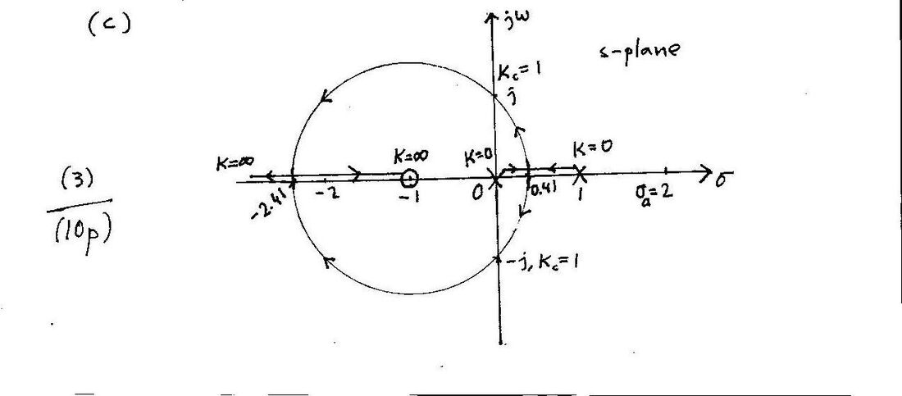

· EEM322
EEM322 Denetim Sistemleri: Kısa Sınavlar ve Çözümleri (2005, 2008, 2012 – Uraz)
EEM322 – Denetim Sistemleri · 18.03.2005 · 16.10.2026
Bu yazı, Başkent Üniversitesi EEM322 Denetim Sistemleri dersinin farklı yıllardan kalma kısa sınav (quiz) soru ve çözüm anahtarlarını bir araya getiriyor. Soruları ve el yazısı çözümleri dersin öğretim üyesi Prof. Dr. Alper Uraz hazırlamış. 2004–2005 bahar dönemi sınavları İngilizce, 2007–2008 ve 2012 sınavları Türkçe; çözümler İngilizce. Çözümlerin solundaki sayılar adım puanları, her sınav 10 puan.
Taranmış çözüm anahtarları (2004–2005 Kısa Sınav 3 ve tarihsiz bir "KS3" çözümü) yazının sonunda ZIP olarak indirilebilir. 2004–2005 Kısa Sınav 1, 2007–2008 Kısa Sınav 3 ve 2012 Kısa Sınav 3 ise fotoğraflanmış sayfalardan metne aktarıldı; fotoğraflar yayınlanmadı, öğrenci adları ve numaraları çıkarıldı.
2004–2005 Kısa Sınav 1 (18.03.2005, 20 dakika): Alan kontrollü DC servo motor
Soru: Alan (field) kontrollü bir DC servo motor, eylemsizlik momenti J ve dönel viskoz sürtünmesi B olan bir yüke T torku iletmektedir. Alan devresinde Rf direnci ve Lf endüktansı, ef gerilimi ve if akımı; endüvi devresinde Ra direnci ve sabit endüvi akımı (ia = sabit) var. Bütün matematiksel bağıntıları (zaman bölgesinde) yazın; yükün açısal konumu θ(s) ile uygulanan giriş gerilimi Ef(s) arasındaki transfer fonksiyonunu bulun. Ayrıntılı blok diyagramını çizin.
Çözüm:
| Zaman bölgesi | s bölgesi (sıfır başlangıç koşullarıyla) |
|---|---|
| Lf·dif/dt + Rf·if = ef | (Lf·s + Rf)·If(s) = Ef(s) |
| T = K₂·if | T(s) = K₂·If(s) |
| J·d²θ/dt² + B·dθ/dt = T | (J·s² + B·s)·θ(s) = K₂·If(s) |
Transfer fonksiyonu:
θ(s)/Ef(s) = K₂ / [s(Lf·s + Rf)(J·s + B)] = Km / [s(Tf·s + 1)(Tm·s + 1)]
burada Km = K₂/(Rf·B), Tf = Lf/Rf (alan zaman sabiti), Tm = J/B (mekanik zaman sabiti).
Blok diyagramı: Ef(s) → [1/(Lf·s + Rf)] → If(s) → [K₂/(s(J·s + B))] → θ(s).
2004–2005 Kısa Sınav 3 (23.05.2005, 30 dakika): İki kazanç için Bode çizimi
Soru: Birim geri beslemeli sistemde G(s) = K / [s(s + 1)(s + 4)]. Düz çizgi yaklaşımıyla K₁ = 8 ve K₂ = 40 için Bode diyagramlarını çizin (genlikte 10 dB/cm, fazda 45°/cm). Kazanç ve faz kesim frekanslarını, kazanç ve faz paylarını diyagramda gösterip yaklaşık değerlerini okuyun. Her iki K değeri için kapalı döngü kararlılığını tartışın.
Çözüm:
- K₁ = 8 için zaman sabiti biçimi: G(s) = 2 / [s(1 + s)(1 + s/4)], G(jω) = 2 / [jω(1 + jω)(1 + jω/4)] = M∠φ. Köşe frekansları 1 ve 4 rad/s.
- 20 log M = 20 log 2 − 20 log ω − 20 log √(1 + ω²) − 20 log √(1 + ω²/16)
- φ = −90° − tan⁻¹ω − tan⁻¹(0.25ω)
- Diyagramlardan (K₁ = 8): kazanç kesim frekansı ωg = 1.4 rad/s, faz kesim frekansı ωp = 2 rad/s; kazanç payı gm = 6 dB, faz payı pm = 14°.
- K₂ = 40 için faz eğrisi değişmez (ωp = 2). Genlik eğrisi 20 log 10 − 20 log 2 = 14 dB yukarı kayar: yeni ωg′ = 3.2 rad/s, gm′ = −8 dB, pm′ = −18°.
- Kapalı döngü sistem K₁ = 8 için kararlı, K₂ = 40 için kararsızdır.

Not: Değerler asimptot diyagramından okunmuştur. Tam hesapla ωp = 2 rad/s'de |G| = 0.4 olduğundan K = 8 için gm ≈ 8 dB, ωg ≈ 1.22 rad/s ve pm ≈ 22°; K = 40 için gm ≈ −6 dB'dir. Kararlılık sonucu aynıdır (Routh ile kritik kazanç K = 20).
Tarihsiz "KS3" çözüm anahtarı: Açık döngüde kararsız kutuplu kök yer eğrisi
Aynı tarama iki ayrı klasörde ("control 2" ve "denetim") birer kopya hâlinde duruyordu. Soru kâğıdı yok; çözümden sistemin G(s) = K(s + 1) / [s(s − 1)] olduğu anlaşılıyor.
- (a) Kapalı döngü karakteristik denklemi: Δ(s) = s(s − 1) + K(s + 1) = s² + (K − 1)s + K = 0. Routh tablosu: s²: 1, K; s¹: K − 1; s⁰: K ⇒ kapalı döngü K > 1 için kararlı. Kritik kazanç Kc = 1; yardımcı denklem s² + 1 = 0 ⇒ s₁,₂ = ±j.
- (b) Açık döngü kutupları 0 ve 1 (n = 2), sıfırı −1 (m = 1) ⇒ asimptot sayısı n − m = 1. Asimptot merkezi σa = (Σpi − Σzi)/(n − m) = (1 − (−1))/1 = 2, açısı θk = (2k + 1)π/(n − m) = π.
- Ayrılma noktaları: K = −s(s − 1)/(s + 1) ⇒ dK/ds = −[(2s − 1)(s + 1) − (s² − s)]/(s + 1)² = 0 ⇒ s² + 2s − 1 = 0 ⇒ kökler −2.41 ve 0.41.
- (c) Kök yer eğrisi: kollar 0 ve 1'deki kutuplardan (K = 0) çıkıp 0.41'de gerçek eksenden ayrılıyor, Kc = 1'de sanal ekseni ±j'de kesiyor, −1 merkezli bir çember üzerinden −2.41'de gerçek eksene dönüyor; biri −1'deki sıfıra, diğeri −∞'a (K = ∞) gidiyor.

2007–2008 Kısa Sınav 3 (01.05.2008): Dördüncü dereceden sistemin kök yer eğrisi
Bu kâğıdın fotoğrafında yalnız soru ve öğrencinin çözümünün başı okunabiliyor.
Soru (Türkçe aslından): Birim geribeslemeli bir denetim sisteminin açık döngü aktarım işlevi (OLTF)
G(s) = K / [s(s + 1)(s + 3)(s + 4)]
olarak verilmiştir.
- (a) Kapalı döngü karakteristik denklemden (CLCE) yararlanarak K'nın tüm değerleri için kapalı döngü kararlılığını irdeleyiniz; kritik K değerini ve kritik noktaları bulunuz.
- (b) Asimtotların merkezi (centroid) ve açıları için kullanılan formülleri veriniz ve kullanınız. Kökyereğrisi (root-locus) çiziminde olası ayrılma (breakaway) noktalarını hesaplayınız. (dK/ds)'nin köklerinden biri olan −2 ayrılma noktası değildir.
- (c) 0 ≤ K < ∞ aralığı için tüm ayrıntıları belirterek kökyereğrisini çiziniz.
Öğrencinin çözümü karakteristik denklemi açarak başlıyor: Δ(s) = K + s(s + 1)(s + 3)(s + 4) = K + (s³ + 3s² + s² + 3s)(s + 4) = K + s⁴ + 8s³ + 19s² + 12s = 0. Kâğıdın üst köşesinde asimptot formülleri (σ = (Σpj − Σzi)/(n − m), θk = (2k + 1)π/(n − m)) görülüyor.
Not: Fotoğrafta çözümün devamı yok; kontrol için hesaplanan sonuçlar: Routh tablosundan kapalı döngü 0 < K < 26.25 için kararlı, kritik kazanç Kc = 26.25 ve kritik noktalar s = ±j1.22; asimptot merkezi σa = (0 − 1 − 3 − 4)/4 = −2, açıları ±45° ve ±135°; dK/ds = 0 denkleminin kökleri −2, −0.42 ve −3.58 olup ayrılma noktaları −0.42 ve −3.58'dir (−2 gerçek eksende kök yer eğrisi üzerinde olmadığından ayrılma noktası değildir).
2012 Kısa Sınav 3: Sıfırlı ve kararsız kutuplu sistem
Soru (Türkçe aslından): Birim geribeslemeli bir denetim sisteminin açık döngü aktarım işlevi (OLTF) G(s) = K(s + 2) / [(s + 1)(s − 1)] olarak verilmiştir. (a) CLCE'den yararlanarak K'nın tüm değerleri için kapalı döngü kararlılığını irdeleyiniz; kritik K değerini ve kritik noktaları bulunuz. (b) Asimtotların merkezi ve açıları için kullanılan formülleri veriniz ve kullanınız; olası ayrılma noktalarını hesaplayınız. (c) 0 ≤ K < ∞ için tüm ayrıntıları belirterek kökyereğrisini çiziniz.
Çözüm anahtarı:
- (a) Δ(s) = s² − 1 + K(s + 2) = s² + Ks + 2K − 1 = 0. Routh tablosu: s²: 1, 2K − 1; s¹: K; s⁰: 2K − 1 ⇒ kapalı döngü K > 1/2 için kararlı. Kc = 0.5 ⇒ s² + 0.5s = 0 ⇒ kritik nokta s₁ = 0.
- (b) Açık döngü kutupları −1 ve 1 (n = 2), sıfırı −2 (m = 1) ⇒ bir asimptot. Merkez σa = (1 − 1 − (−2))/1 = 2, açı θk = (2k + 1)π/(n − m) = π.
- Ayrılma noktaları: K = (1 − s²)/(s + 2) ⇒ dK/ds = [−2s(s + 2) − (1 − s²)]/(s + 2)² = 0 ⇒ s² + 4s + 1 = 0 ⇒ kökler −0.27 ve −3.73.
- (c) Kök yer eğrisi, −2'deki sıfır çevresinde bir çember çizerek −0.27'de ayrılıp −3.73'te gerçek eksene döner.
Aynı sınavın bir öğrenci kâğıdında da Δ(s) = (s + 1)(s − 1) + K(s + 2) = s² + Ks + 2K − 1 yazılmış, Routh tablosundan Kc = 1/2 bulunmuş; asimptot açıları θk = (2k + 1)π/(n − m) ile k = 0 ve k = 1 için 180° ve 540° (yani yine 180°) hesaplanmış.